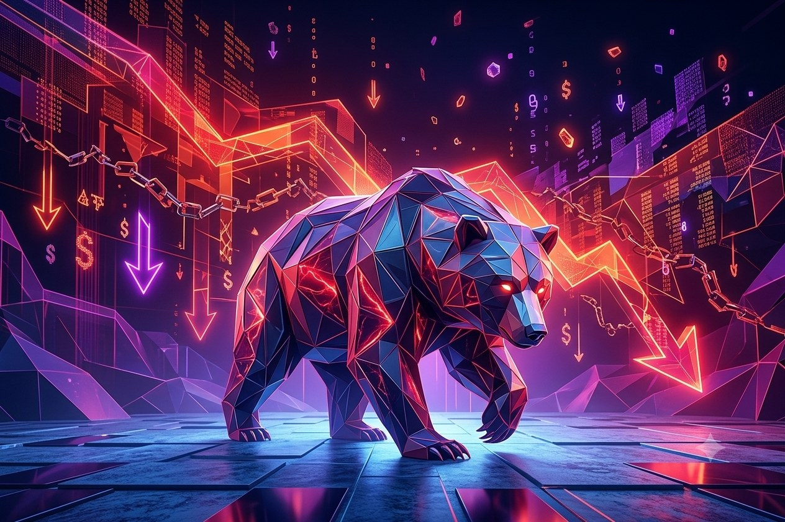

The $20,000 Coffee
In 2012, a $5 coffee, paid for in Bitcoin. The screen froze, so he sent it again, thinking the first payment failed. Neither transaction went through, so he paid with a debit card instead. Those two "failed" transfers — 0.1 Bitcoin each — are worth close to $20,000 combined today.
If you'd known it would turn out like this, would you have bought it anyway? Usually the honest answer is no — because nobody makes decisions with hindsight. Everyone only ever gets to decide in the present moment, and the present moment is always full of doubt and fear. That's really what this conversation is about.
Two Positions, One Sharp Disagreement
One is a strategist who believes deeply in Bitcoin. The other insists the S&P 500 is the only rational choice. They spend most of the exchange contradicting each other. The crypto strategist opens with a number: Bitcoin has fallen more than 70% on multiple separate occasions. The index strategist fires back — the S&P 500 makes people lose money too, not because the index is bad, but because every downturn triggers panic-selling.
The argument lands on NASDAQ in 2000. The index fell 77% from its peak, and it took 15 years — not until 2015 did it reclaim that high. "If you were 25 when that started," the crypto strategist says, "you'd be 40 by the time it broke even." The index strategist doesn't dispute the number, because it's true. He just says: "But whoever held on made more than almost anyone else."
The Trade-Off Everyone Agrees On
They disagree on almost everything, but land in the same place on one point: return and volatility come as a pair. The index strategist runs the numbers — S&P 500's average bear-market drawdown is around 25%, for a long-run payoff of roughly 10% annualized. The crypto strategist picks it up: Bitcoin's average drawdown is far worse, but the long-run return is far higher too. Who's right? Both. The only difference is how much psychological pain you'll trade for how much return — which is really the whole point of this conversation. It was never about what to buy. It's whether you can hold it.
You Can Fall at 25. Not So Much at 50.
The index strategist: at 25, losing everything in one asset is survivable — worst case, you move back in with your parents, like most people have at some point. "But you really don't want to do that at 50." People naturally get more risk-averse with age — not because one approach is wrong, but because it comes down to how much time you have left to absorb being wrong.
A more specific version of the same math: start at 33 building toward stable dividend income, and that path can take a decade — by 43, you'd finally see that cash flow every month. He calls it "a decade of sacrifice," which is exactly why so few stick with it. Then he turns to the crypto strategist: "Do you want to hold onto the hope that Bitcoin pays off, or would you rather have more security?"
What a 25-year-old and a 50-year-old should bet on can look completely different. But regardless of the stage of life, whether you can keep your money in the market long enough to see it through is what determines the outcome.
A Third Strategist, a More Conservative Answer
The host turns to a third strategist: if someone only had $1,000, what would he suggest? His answer looks nothing like the other two. If it's genuinely spare cash, he'd put it toward improving himself — books, a course, anything that raises earning potential — because $1,000 at 10% is only $100 richer a year later. For someone who just wants to work their job, his allocation is 90% broad index fund, 10% speculative. His target: get a 25-year-old to $100,000 as fast as possible, because past that threshold, there's more room to take on real risk.
Three strategists, three answers — none tells you to bet everything on one asset, none tells you to avoid risk entirely. The only real difference is how much each is willing to trade for how much upside.
The Hardest Part Isn't Picking Right — It's Doing Nothing
A story has circulated in financial circles for over a decade: a major fund company supposedly found that the best-performing accounts belonged to clients with no login activity at all — some tied to estates still being settled after the account holder had passed away. The source is genuinely hard to trace, and some analysts question whether it's even real. But it's stuck around because it captures something true: those accounts performed well not because someone made smart decisions, but because no one made any decisions at all. No panic-selling. No chasing rallies.
There's a real study that says nearly the same thing, tracked every year for three decades: Dalbar's Quantitative Analysis of Investor Behavior. It measures what real investors actually walked away with, accounting for exactly when they bought and sold. In 2024, the S&P 500 returned 25.02%. The average equity fund investor captured just 16.54% — a gap of 848 basis points, not from picking the wrong fund, but from bad timing.
Stretched over decades, compounding turns that gap staggering. $100,000 left untouched in the S&P 500 grows to $717,503 over 20 years. The same $100,000, moved the way average investors actually behave, ends at $345,614 — less than half. Same asset. One person did nothing; the other reacted to every swing.
Bitcoin's Answer Turns Out to Be the Same One
Asked why he stays confident despite the brutal swings, the crypto strategist's answer echoes the same idea: Bitcoin's total supply was hard-coded from day one — never more than 21 million coins. Unlike stocks or real estate, no one can change that supply.

Across four complete market cycles, Bitcoin has fallen from its peak by 93% (2011), 86% (2015), 84% (2018), and 77% (2022). Each looked like the end. Each was followed by a new all-time high. The drawdowns have gotten shallower over time, but the script hasn't changed: collapse, a recovery long enough to make you question everything, and a payoff that only reaches whoever held on.
How the People Who Actually Held On Did It
The crypto strategist gets asked: to survive a 15-year gap like NASDAQ's, is that realistic for a normal person? His answer, no hesitation: dollar cost averaging.
He describes his approach through the 2022 crypto bear market — no calling the bottom, no waiting for a signal, just buying steadily the whole way down. While the broader market was still below its previous high, his own portfolio had already hit new highs, because he'd steadily lowered his average cost. "That's compounding actually working for you," he says. The index strategist agrees — he calls it Buffett's move: treating every downturn as a chance to buy more shares with the same money, not a disaster.
It's one of the few places where two people who disagree about almost everything land in the same spot: dollar cost averaging works not because it guarantees the bottom, but because it turns "should I buy right now" — a decision panic or greed hijacks every time — into something that doesn't require a decision at all.
Three Assets, One Question
That $20,000 coffee. NASDAQ's 15-year gap. Bitcoin's four separate collapses. A story about untouched accounts that may or may not be literally true. Three strategists argued about metrics for the better part of an hour and landed on one shared conclusion: holding on was never about willpower. It's about not having to make a decision in the moment at all. When NASDAQ was down 77%, when Bitcoin was cut in half in a day, what determined the outcome usually wasn't which asset someone picked. It was whether their hand moved toward the sell button that day.
Figures compiled from public market data including Dalbar's Quantitative Analysis of Investor Behavior and historical NASDAQ/Bitcoin price records.